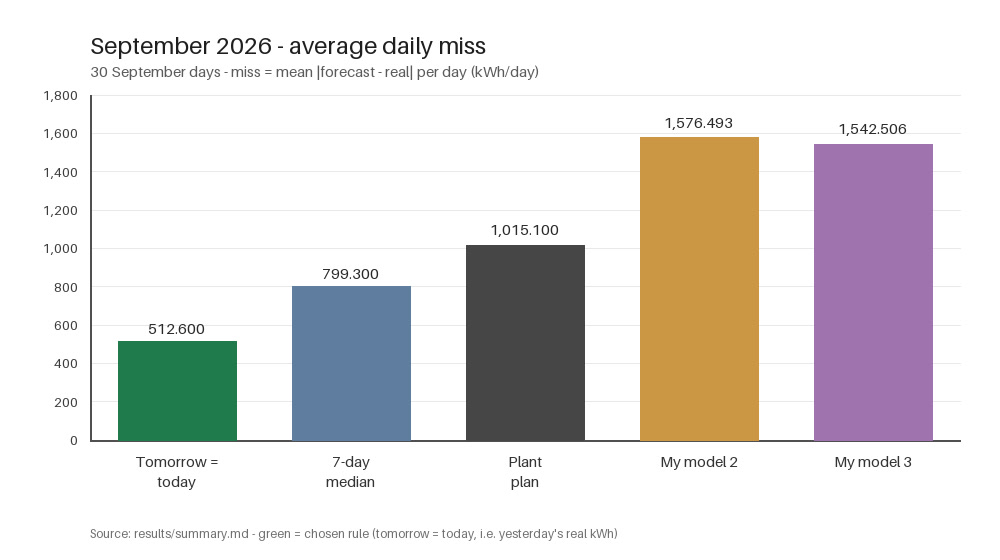
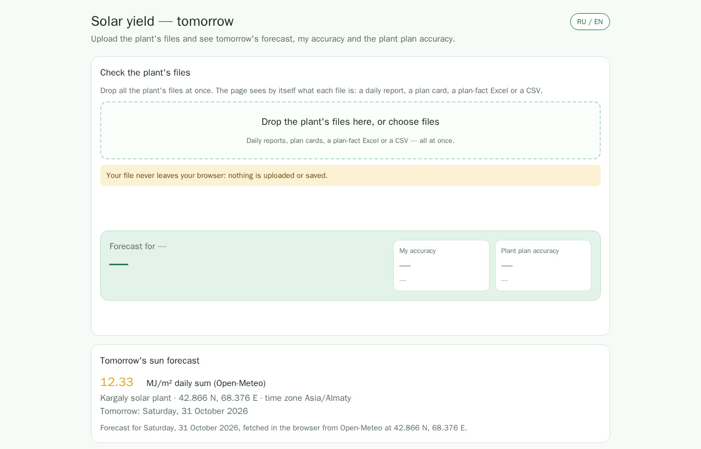

A Solar Forecast That Beats the Plan

In one sentence: Using yesterday's real output as tomorrow's forecast cut the mean daily miss to 512.600 kWh in September, against 1,015.100 kWh for the plant plan.
The problem
Every day a solar plant must send the grid a plan for tomorrow, hour by hour. When the real output differs from the plan, the plant pays for the difference. The sun does not follow a plan: clouds and outages make the daily total hard to predict.
How it works
June to September 2026 gives 122 days; October adds 27, for 149 days. I tested yesterday's output, the 7-day median, the plant plan, a linear weather model and a small random forest. Inputs came from the plant's daily reports and plan files and from Open-Meteo weather data; the hourly split uses pvlib clear-sky curves at Kargaly (42.866 N, 68.376 E).
Results
Tested on 30 clean September days and 26 clean October days. Outage and plan-zero days are counted apart.
| Method | September miss, kWh | Within 10% |
|---|---|---|
| Plant plan | 1,015.100 | 12 of 30 |
| Yesterday's output | 512.600 | 23 of 30 |
On October's 26 clean days, yesterday's output missed 1,109.877 kWh on average (16.78%) against 1,651.382 kWh (24.96%) for the plan; it was within 10% on 15 of 26 days against 10 of 26. The learned weather models did worse in September (20.4–20.9% miss), so the page keeps the simple rule. Cloudy days and outages still cause large misses.

Limitations and ethics
The test is small: one plant, 26 clean October days, and one month that was not used to choose the forecast. September was seen many times during development, so October is the honest test, and it is still only one month. The page uses no private data: files are read in the browser and never uploaded, and no plant data or other people's names are published.
Cite
@misc{solar-yield-predictor2026,
title = {A Solar Forecast That Beats the Plan},
author = {Aruna Bekniyaz},
note = {FRP 2026, ISSAI, Nazarbayev University},
year = {2026}
}